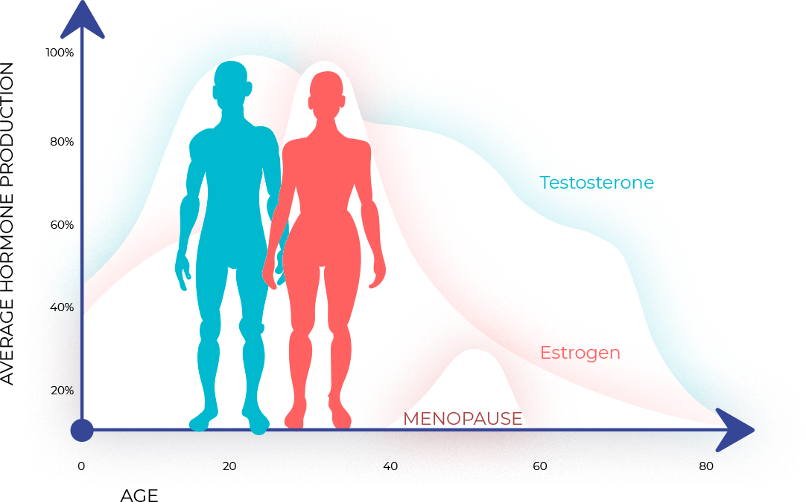
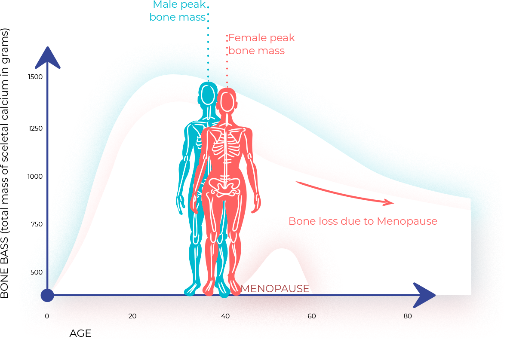

COURSE OVERVIEW: The program is taught by our lead instructor and Physician Advisory Board Director, Anne Roberts, MD, a Board-Certified Specialist in Internal Medicine and Anti-Aging Medicine and a graduate from the prestigious Yale University School of Medicine. Dr. Roberts is also residency trained from the Mayo Clinic in St Paul, MN. In addition to her advisory role with Empire Medical Training, Dr. Robins maintains a very busy internal medicine practice with a focus on regenerative and weight management medicine.
Anti-aging medicine complements conventional medicine. The specialty originated from using and applying advanced scientific methods for the early detection, prevention, treatment, and reversal of age-related dysfunction, chronic disorders, and other health related diseases. Anti-aging is an evidenced-based interventional medical care model that is consistent with those applied in other preventive health specialties. The anti-aging medical model will allow you to both extend lifespan and health span for patients, allowing them to live independently and productively for a greater period of time.
Anti Aging Medical Training
ANTI AGING MEDICINE POPULARITY: Anti-Aging Medicine and Functional Medicine has quickly become a large model of health care due to the recently-recognized and widely-accepted breakthroughs in hormonal medicine, publicized through the media and other public channels. Anti-Aging training and integrated medicine is in high demand by medical practitioners due to the well-known benefits achievable for patients and the significant revenue stream created by offering these “in-demand” services.
PATHOLOGY OF AGING: Throughout the aging process our bodies change and develop certain deficiencies due to life changes and genetics. We develop various chronic or persistent symptoms that many people ignore or procrastinate until later in life when the problem becomes more serious. Like many conditions in medicine, early intervention, prevention, and treatment will have a significant role in the outcome. Many of these conditions are the result of over/under glandular activity and can be treated effectively with hormonal intervention. Hormones decline as we age, but Bioidentical hormone therapy replaces the hormones that your body needs to function.
This conferences will give you a comprehensive understanding on how to test for, analyze, and effectively treat the most common and important chronic conditions associated with abnormal hormonal levels.
Abbreviated List of Ailments and Conditions Treatable Using Hormonal Therapy:
State of the Art Medicine
Integrative and Regenerative Medicine has, in many cases, replaced traditional medicine models for these chronic ailments and their associated symptomatology by combining therapies that utilizes natural supplements in conjunction with a medically regimented HRT (Hormone Replacement Therapies) program to effectively balance hormones and maintain patients’ state of health and wellbeing.
Bioidentical Hormones have become popular in part due to the molecular similarity between that occurring naturally in the human body. Bioidentical Hormones are molecule by molecule exactly the same as the hormones present in the human body. Using Bioidentical Hormones in your medical practice provides additional avenues to effectively treat your patient where you may have been limited in the past to strictly conventional medicine.
Anti-Aging Medicine and Integrative Medicine is now a 15-billion-dollar market and includes most of the popular, natural treatments and methods to improve overall health and well-being and alleviate many of the chronic conditions that continue to affect the aging patient. Integrative Medicine is meant to compliment traditional medicine and not necessarily replace conventional medicine.
CLASS INFORMATION & MORE ABOUT THE TRAINING: Understanding how to implement and fully manage your patients using HRT and all the related protocols starting from the initial patient intake to the full patient evaluation, including interpreting laboratory results and implementation of an ongoing treatment plan is an integral component for any medical practice incorporating regenerative medicine and integrative therapies. The evidence-based science that formulates the very basis of how Hormone Replacement Therapy is effective will be thoroughly covered and presented in your course materials. Attendees will also gain a thorough understanding on how to effectively prescribe supplements and nutraceuticals, which will enhance the medical benefits associated with hormone therapy.
Sex Hormone Production in Men & Woman
Anti Aging Medical Training
Included with the course you will receive information on natural supplementation options for your patients as well as the use of SECRETAGOGUES and PEPTIDES for patients to naturally enhance their well-being. SECRETAGOGUES and PEPTIDES can be used in place of such hormones as HGH in achieving a natural response by the body to create the necessary HGH biologically, and this can be offered as an additional option for your patient.
Upon completion of the program, the physician should be able to:
Decreasing bone mass in Men & Woman
Empire Medical Training offers 3 different optional memberships where you can attend up to 36 courses FREE and take advantage of many additional benefits
*All courses are conducted by Physicians and other Specialists in Aesthetics, Pain, Surgery, and Medicine. Not by less qualified Instructors
Course Destinations: New York-NY, Las Vegas-Nevada, Atlanta-Georgia, Chicago-Illinois, Nashville-Tennessee, Philadelphia - PA, Riverside-California, New Orleans-Louisiana, Detroit-Michigan, Austin-Texas, Charlotte-North Carolina, Orlando-Florida, Dallas-Texas, Los Angeles-California, Tampa-FL, Fort Lauderdale-FL, Houston-Texas, Naples-FL, Raleigh-North Carolina, San Diego-CA, Charleston-South Carolina, Boston-Massachusetts.